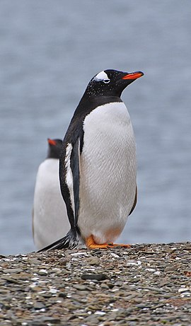

Tučňák oslí (Pygoscelis papua) je nelétavý pták z rodu Pygoscelis, do kterého se řadí taktéž tučňák kroužkový (Pygoscelis adeliae) a tučňák uzdičkový (Pygoscelis antarctica). Společně pak patří do jedné čeledi tučňákovitých (Sphenisciformes). Vyskytuje se kolem jižního polárního kruhu, hnízdí především na Antarktickém poloostrově a ostrovech v oblasti Antarktické konvergence. V období migrace se může vyskytovat až u Nového Zélandu, Tasmánie nebo na březích Argentiny. Jako první se o něm zmínil německý přírodovědec skotského původu Johann Reinhold Forster, kolem roku 1781, když se s ním střetl při výzkumných plavbách na Falklandských ostrovech[2], které hojně obývá dodnes.[3] Dorůstá až do výšky 90 cm, průměrně 75 cm, a drží tak třetí příčku v pomyslném žebříčku největších žijících zástupců. Dosahuje téměř devítikilogramové hmotnosti, která je ale vysoce proměnlivá (průměrně váží pět kilogramů). Živí se potravou v moři, především menšími rybami, krilem a případně hlavonožci, na základě ročního období a zeměpisné polohy jednotlivých kolonií.
